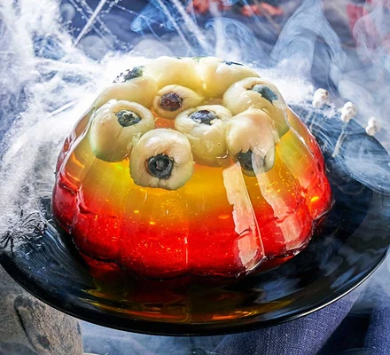

Eyeball Jelly

Description
This delicious dessert is made with a red and green jelly
Ingredients
- 100g blueberries
- 425g can lychees in syrup, drained
- popping candy (optional)
- 135g pack each red and green jelly
Steps
- Push a blueberry into the hole of each drained lychee to make spooky ‘eyeballs’. Pop the lychee eyeballs into a jelly mould or pudding bowl (ours was 1.2 litres, and measured 18cm across the base). Sprinkle over the popping candy, if using.
- Make the green jelly following pack instructions, then pour enough of it into the mould to hold the lychees at the base once set (if you skip this step, the lychees will float to the top of the mould). Chill for 30 mins, or until lightly set. Keep the rest of the jelly at room temperature.
- Pour the remaining jelly into the mould and return to the fridge for at least 2 hrs until firmly set.
- Make the red jelly following pack instructions, then pour into the mould. Chill for at least 2-3 hrs, or up to two days ahead. To serve, dip the outside of the jelly mould in hot water for about 30 seconds, put a serving plate on top of the mould, then quickly flip over and give the mould a gentle shake to encourage it to come out onto the plate. Will keep chilled for two days.
Home